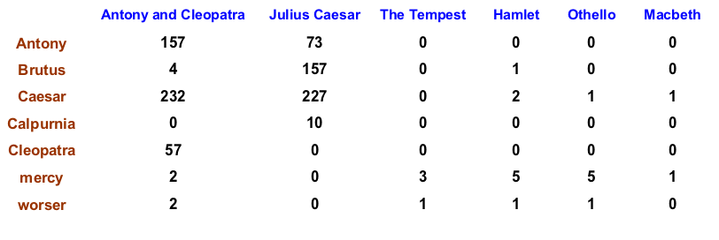

Doküman İndekslemek, Aramak, TF-IDF
Bir doküman arayıp bulmak için popüler tekniklerden biri onu bir vektör olarak temsil etmek. Vektörün her hücresi bir kelimeyi temsil eder ve bu vektörde, bu ve tüm diğer dokümanlardaki kelimelerin her birinden o dokümanda kaç tane olduğu saptanır, hücreye o kelimeye tekabül eden yere bu sayı yazılır. Bu doküman temsil yöntemine "kelime çuvalı (bag-of-words)" yaratmak ismi de veriliyor, çünkü temsil yöntemi kelimelerin arasındaki sırayı dikkate almıyor, sadece kelime sayılıp vektöre yazılıyor, bilgi "çuvala" atılmış oluyor, çuval içinde herşey birarada, sıra önemi kalmamış.
Altta yazar Shakespeare'in bazı eserlerini kolonda, o eserlerdeki kelimelerin bazılarını satırda gösterirsek,

Hamlet eserinde (doküman) Ceasar (Sezar) kelimesi 2 kez geçiyor. Şimdi Hamlet kolonunun tamamına bakarsak o vektörün tamamını Hamlet dokümanını temsil eden bir vektör olarak görebiliriz, ve arama yaparken bu vektörleri kullanabiliriz.
TF
Fakat bir dokümanda geçen kelime sayısını direk kullanmak uygun olur mu? Mesela bir terim (kelime) bir dokümanda 10 kez geçiyor, diğerinde 1 kez geçiyorsa evet, kelimenin 10 kez geçtiği dokümanda bu terim daha önemlidir, ama 10 kat daha mı önemlidir? Hayır. Frekansın (yani terim sayısının) log'unu alırsak bu doğrusal, lineer alakayı / oranı azaltabiliriz belki, o zaman $t$ teriminin $d$ dokümanındaki önemli / ağırlığı (weight),
$$ w_{t,d} = \left\{ \begin{array}{ll} 1 + \log tf_{t,d} & \textrm{ eğer } tf_{t,d} > 0 \\ 0 & \textrm { diğer } \end{array} \right. $$
olarak gösterilebilir.
$tf_{t,d}$: $t$ kelimesi kaç kez $d$ dokümanı içinde görülüyor.
IDF
Nadir görülen kelimeler sık görülen kelimelere nazaran aramakta daha faydalıdır. Mesela içinde kolonoskopi kelimesi geçen bir doküman düşünelim, bu nadir bir kelime, günlük konuşma, normal yazım içinde çok kullanılmaz, ve eğer kolonoskopi kelimesiyle bir arama yapıyorsak içinde bu kelimenin geçtiği her doküman bizi ilgilendirir, kelime nadir olduğu için onun içinde olduğu her doküman büyük bir ihtimalle aradığımız dokümandır. Arama sırasında bu tür nadir kelimelere daha fazla ağırlık verilmesini isteriz. Tüm dokümanlarda sık görülen kelimelere ise daha az ağırlık vermek daha iyi olur.
Bu tür bir ağırlığı tanımlamak için önce doküman frekansından başlarız. $N$: doküman sayısı, $df_t$: $t$'yi içeren kaç tane doküman olduğu, $df_t \le N$ olacak şekilde. Ardından ters doküman frekansı (inverse document frequency) lazım, çünkü nadir kelimeler az dokümanda, sık kelimeler çok dokümanda olur, birincinin ağırlığı fazla ikinci az olsun istiyorsak bu hesabı tersine çevirmemiz lazım, bir bölüm işlemi ile bunu başarırız,
$$ idf_t = \log (N/df_t) $$
TF-IDF
Eh üstte bahsettiğimiz iki ölçütü birleştirirsek ünlü TF-İDF ölçütünü elde ederiz.
$$ w_{t,d} = (1+\log tf_{t,d}) \cdot \log (N/df_t) $$
Not olarak şunu da ekleyelim; üstteki temsil sistemi, ya da birazdan anlatacağımız arama sisteminin istatistiksel bir temeli yok. Yöntem akıllı tahmin (heuristics) ile, deneme / yanılma, sayısal deneyler kullanılarak kararlaştırılmış. İyi işlediği görülmüş, ve kullanılmaya devam edilmiş. Bir açıdan yapay öğrenimdeki özellik yaratmak (feature extraction) yapılan, ham veriyi işleyip onu daha rahat çalışılabilecek bir hale getirmek.
Sorgulamak (Querying)
Bir dokümanı vektör olarak temsil ediyoruz. Şimdi bir sorgu var elimizde, bu sorgudaki kelimeleri de TF-IDF ile bir vektöre çevirebiliriz, o zaman bu sorgunun (vektörün) hangi dokümana daha yakın olduğunu bulmak bize sorgulama yeteneğini sağlar. Uzaklık için en çok kullanılan teknik kosinüs uzaklığı, benzerliğidir,
$$ \cos\theta = \frac{A \cdot B}{||A||||B||} $$
Eğer $A,B$'yi normalize edersek, ki $||A||=||B||=1$ olacak şekilde, o zaman
$$ \cos\theta = A \cdot B $$
yeterli olur. $A$ tek bir vektör olabilir, ya da içinde tüm dokümanları temsil eden vektörlerin üst üste konulduğu bir matris olabilir. Sorgu vektörü $B$. Bu durumda hala tek bir çarpım yeterli, ama o tek çarpım bu sefer bize sorgunun tüm dokümanlara olan yakınlığını verir.
Altta bu kavramların kullanımını görüyoruz; daha önce [4] yazısında
kullandığımız veriler bunlar, Barack Obama ve Stephen Hawking'in
yazdıklarından alınan bölümler. Önce indeksleme, sonra bazı kelimelerle
arama yapıyoruz. Kelimeleri sayısal bir kolon indisine çevirmek için
anahtarlama numarası kullanıldı (aynı yazıda bundan da bahsediliyor);
D kadar kolon tanımlıyoruz, her kelime üzerinde bir hash sayısı
hesaplayıp matematik modülosunu alıyoruz (bölümden arta kalan sayı) bu
sayıyı kolon indisi yapıyoruz. Böylece D'den fazla kolon olamaz, ve
her kelime hala aynı / özgün kolona gider.
import nltk, string, sys
import scipy.sparse as sps
base = "../../stat/stat_naive/data/%s"
stemmer = nltk.stem.porter.PorterStemmer()
def stem_tokens(tokens):
return [stemmer.stem(item) for item in tokens]
D = 10000
docs = ['a1.txt','a2.txt','a3.txt','a4.txt','b1.txt','b2.txt','b3.txt','b4.txt']
N = len(docs)
A = sps.csr_matrix((N,D))
print A.shape
for i,f in enumerate(docs):
file = base % f
lowers = open(file).read().decode("ISO-8859-1").lower()
tokens = nltk.word_tokenize(lowers)
tokens = stem_tokens(tokens)
print i, tokens[:6]
# kelimeler kolonda, dokumanlar satirda
for token in tokens: A[i,hash(token) % D] += 1
(8, 10000)
0 [u'a', u'well-known', u'scientist', u'(', u'some', u'say']
1 [u'kepler', u',', u'and', u'the', u'italian', u',']
2 [u'time', u'in', u'such', u'a', u'manner', u'as']
3 [u'of', u'mass', u'and', u'energi', u'in', u'it']
4 [u'page', u'provid', u'a', u'manifesto', u'for', u'action']
5 [u'take', u'a', u'deep', u'breath', u'.', u'when']
6 [u'larger', u'mean', u'.', u'we', u'lose', u'elect']
7 [u'so', u'let\xe2\x80\x99', u'be', u'clear', u'.', u'the']
from sklearn.preprocessing import normalize
N = A.shape[0]
# sifirdan buyuk tum frekanslari 1 yap, boylece kelime bazinda
# bazinda toplam alinca o kelimenin kac diger dokumanda oldugu
# hemen hesaplanir.
A[A > 0] = 1.
idf = A.sum(axis=0)
# sadece sifir olmayan ogelerin log'unu al
idf[idf.nonzero()] = np.log(N/idf[idf.nonzero()])
tf = A.tocoo()
tf.data = 1 + np.log(tf.data)
tfidf = sps.csr_matrix(tf.multiply(idf))
tfidf = normalize(tfidf, norm='l2', axis=1)
import pandas as pd
def search(s):
sm = sps.lil_matrix((1,D))
tokens = nltk.word_tokenize(s.lower())
tokens = stem_tokens(tokens)
print tokens[:20]
for token in tokens: sm[0,hash(token) % D] += 1
tfidf_new = sm.multiply(idf)
tfidf_new = sps.csr_matrix(tfidf_new)
tfidf_new[tfidf_new==1.0] = 0.0
tfidf_new = normalize(tfidf_new, norm='l2', axis=1)
dist = tfidf.dot(tfidf_new.T)
res = pd.DataFrame(dist.todense(),columns=['score'])
res['docid'] = range(N)
res = res.sort_values(by='score',ascending=False)
res['doc'] = res.apply(lambda x: docs[int(x['docid'])],axis=1)
print res
search("Galileo was a friend of mine")
[u'galileo', u'wa', u'a', u'friend', u'of', u'mine']
score docid doc
1 0.087243 1 a2.txt
0 0.004841 0 a1.txt
2 0.004704 2 a3.txt
3 0.004360 3 a4.txt
7 0.003754 7 b4.txt
4 0.000000 4 b1.txt
5 0.000000 5 b2.txt
6 0.000000 6 b3.txt
search("shortest distance between two points")
[u'shortest', u'distanc', u'between', u'two', u'point']
score docid doc
0 0.058233 0 a1.txt
2 0.056584 2 a3.txt
3 0.029833 3 a4.txt
7 0.025684 7 b4.txt
1 0.022051 1 a2.txt
5 0.006857 5 b2.txt
4 0.001763 4 b1.txt
6 0.000000 6 b3.txt
Kaynaklar
[1] Bayramlı, Dil Isleme, Python - NLTK, https://burakbayramli.github.io/dersblog/sk/2016/04/dil-isleme-python-nltk.html
[2] Manning, Introduction to NLP, Lecture Notes, https://web.stanford.edu/~jurafsky/NLPCourseraSlides.html
[3] Bayramlı, Scipy Seyrek Matrisleri (Sparse Matrices), https://burakbayramli.github.io/dersblog/sk/2016/04/scipy-seyrek-matrisler-sparse-matrices.html
[4] Bayramlı, İstatistik, Naive Bayes
Yukarı